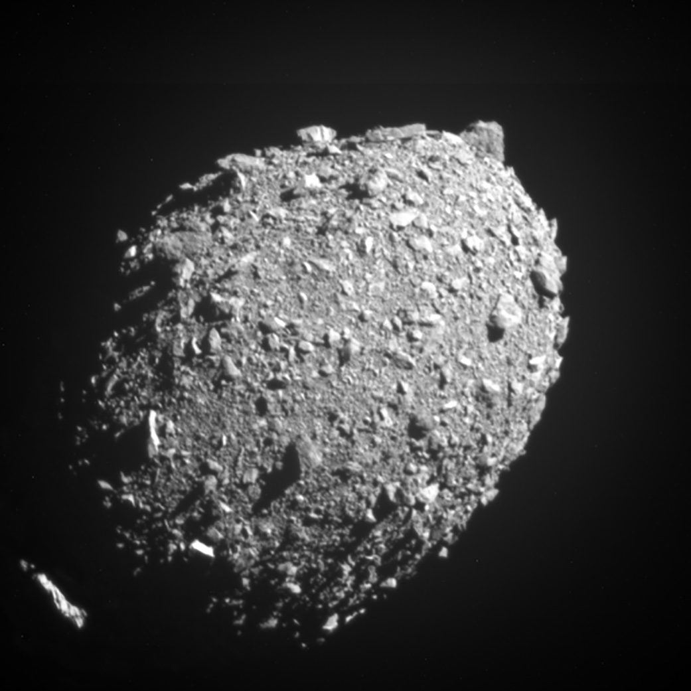

Acervo de edições
Sonda Hera encontra cratera do tamanho de um estádio no asteroide Dimorphos
Primeiras imagens de perto da missão europeia mostram como o impacto da DART, em 2022, achatou uma face do asteroide e o deixou girando de forma caótica.

A Agência Espacial Europeia (ESA) divulgou em 25 de novembro de 2026 as primeiras imagens de perto do asteroide Dimorphos feitas pela sonda Hera. Elas mostram que a face atingida em 2022 pela sonda DART, da NASA, foi achatada por uma cratera que, segundo a equipe, tem o tamanho de um estádio esportivo e ocupa toda a largura do asteroide.
Dimorphos é uma pequena lua de asteroide, com 151 metros de diâmetro, que orbita o asteroide Didymos, de 730 metros, a uma distância média de cerca de 1 quilômetro. O par está hoje a 193,5 milhões de quilômetros da Terra. Em 26 de setembro de 2022, a DART se chocou de propósito contra Dimorphos no primeiro teste de defesa planetária, isto é, de desvio de um asteroide. O impacto encurtou em 33 minutos o tempo que Dimorphos leva para dar uma volta em Didymos, bem mais do que o previsto. Telescópios na Terra mediram essa mudança, mas não conseguiam ver o que tinha acontecido com o corpo do asteroide.
A imagem principal foi feita em 7 de novembro pela câmera de enquadramento da Hera (AFC, na sigla em inglês), a 29 quilômetros de distância, com resolução de 2,7 metros por pixel. Fora da região do impacto, os campos de rochas parecem iguais aos fotografados pela DART em 2022. "Os cientistas debatiam se Dimorphos tinha sofrido uma cratera, mudado de forma ou ficado igual. A resposta é as três coisas ao mesmo tempo", afirmou o investigador principal da missão, Patrick Michel, do CNRS e do Observatório da Côte d'Azur.
A ESA também relatou duas observações inesperadas. Dimorphos está girando de forma caótica em sua órbita, um movimento conhecido como tombamento. E centenas de rochas de poucos metros, antes desconhecidas, orbitam o par de asteroides; elas aparecem numa imagem de longa exposição do espectrômetro Hyperscout H, que observa em 25 faixas de cor ao mesmo tempo.
A Hera voa hoje a cerca de 25 a 30 quilômetros dos asteroides, a uma velocidade média de 12 centímetros por segundo. A sonda também leva o TIRI, um imageador infravermelho da agência japonesa JAXA que mede a temperatura da superfície. Em dezembro, a nave deve se aproximar a cerca de 13 quilômetros para fazer imagens mais detalhadas. Em janeiro de 2027, ela deve soltar dois nanossatélites do tamanho de uma caixa de sapatos: o Juventas, que vai sondar o interior do asteroide com radar, e o Milani, que vai analisar a composição do material e da poeira ao redor.
Os dados ajudam a entender por que o desvio funcionou tão bem e em que condições a técnica, chamada de impactador cinético, poderia ser usada contra um asteroide em rota de colisão com a Terra.
Grau de certezaSão resultados preliminares divulgados pela ESA, ainda sem artigo revisado por pares; o tamanho da cratera foi descrito de forma comparativa e medidas mais precisas devem vir das observações mais próximas previstas para os próximos meses.